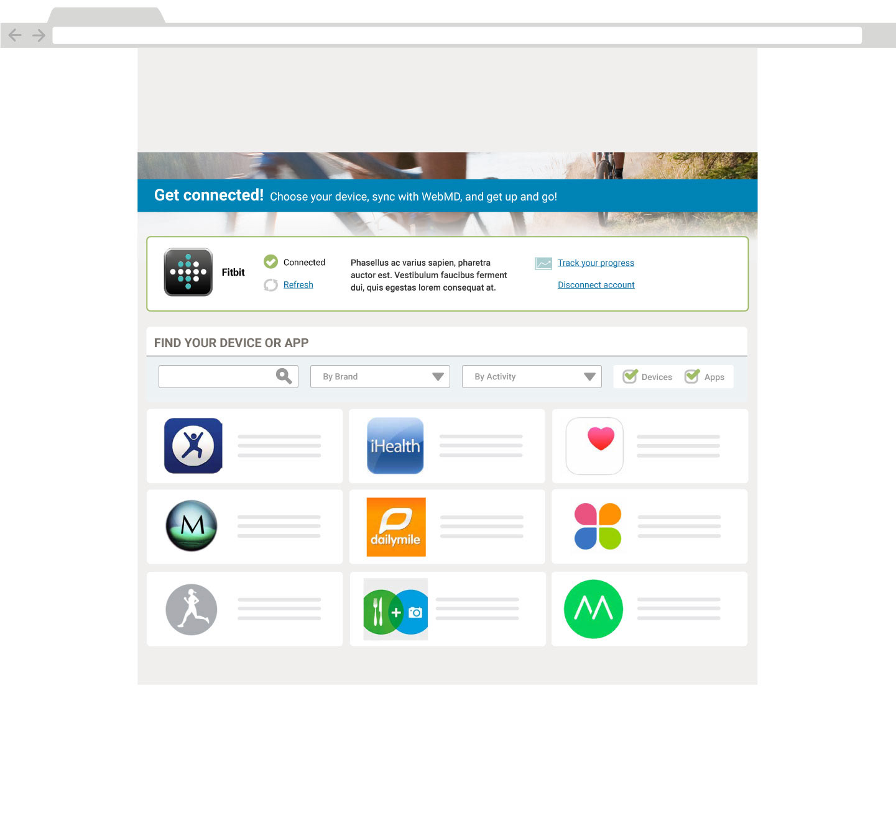
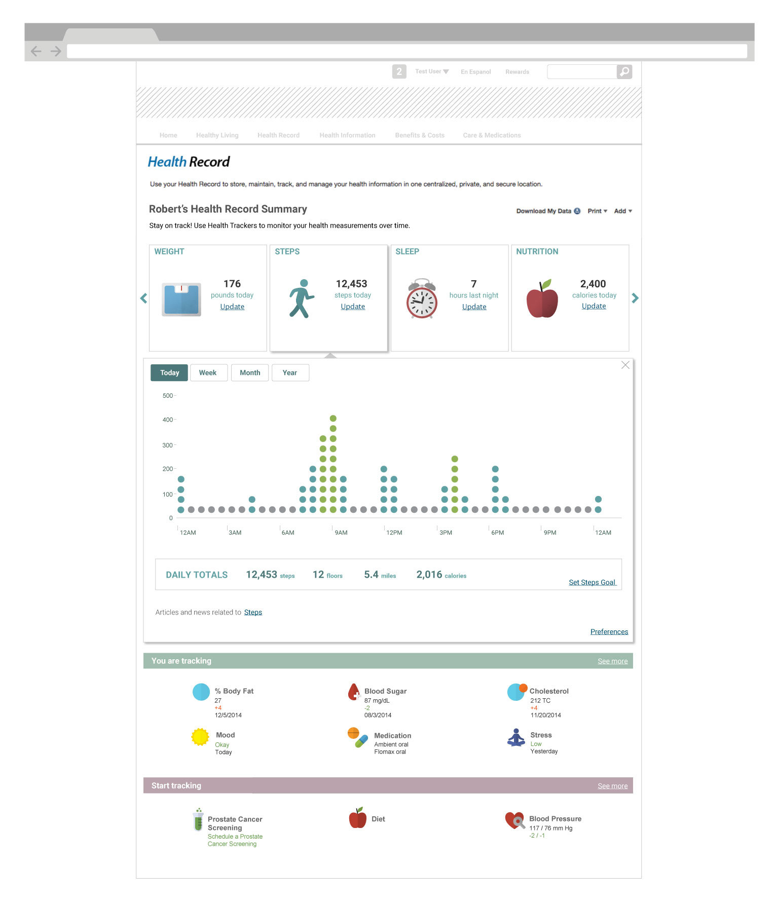
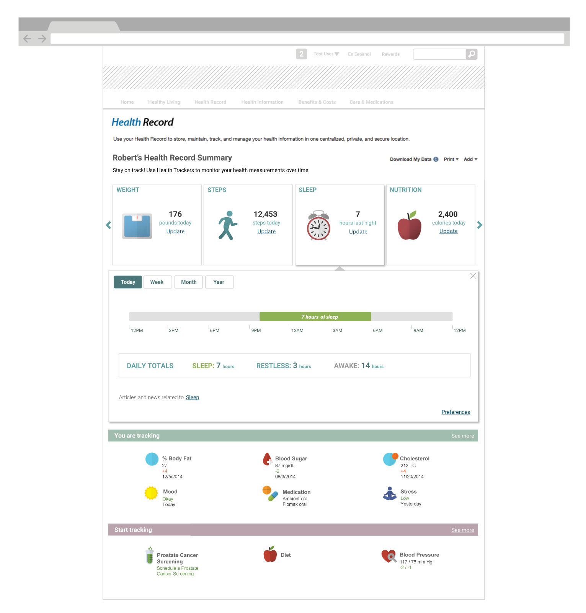

WebMD Health Services · 2015
WebMD — Device Integration UX
WebMD Health Services runs well-being programs that employers and health plans give to their people. In 2015 those people were already counting steps, weighing in and tracking sleep on wearables, then typing the numbers into WebMD by hand. I designed the Device Connection Center: a flow that links a Fitbit or other tracker to a member's WebMD account in a few steps, and Health Record trackers that turn the synced data into something they can act on.
Client
WebMD Health Services
Timeline
2015
Role
UX Designer
Team
Product manager, platform and integration engineers, visual design
Product area
Employee well-being portal · Health Record · Device and app integrations
Focus
Healthcare · Responsive web · Mobile

In one line
Members were already tracking their health on devices, but WebMD only saw what they typed in. I designed the Device Connection Center for WebMD's well-being portal: pick your device, approve the connection with the device maker, and your activity, weight and sleep show up in your Health Record with nothing to type. Every path through the flow ends somewhere useful, including failure and my device isn't listed.
Context and the problem
WebMD Health Services sells to employers and health plans. Their employees and members get a WebMD well-being portal with health trackers, challenges and often rewards for healthy activity. These users didn't choose WebMD. It's a benefit they were given, so each visit has to be worth their time.
By 2015, many of them wore a Fitbit or used a phone app, and they already had their steps, weight and sleep in those apps. To get credit on WebMD, they had to copy the numbers across by hand. Few people bothered, so the portal showed an incomplete picture, and the programs built on it couldn't rely on the data.
The business wanted two things: more people coming back to the portal, and activity data that was accurate enough to support the programs employers were paying for. Connecting devices directly would help with both.
The constraints:
- We didn't control the connection. Linking an account meant sending the member to the device maker's own approval screen (OAuth). We couldn't change that screen, only what came before and after it.
- A short partner list. Only a few devices were supported at launch, starting with Fitbit's range, but members owned many more.
- An existing Health Record. The trackers already existed for manual entry. Device data had to feed them without breaking the manual path.
- Health data and trust. Members had to understand what they were sharing and be able to disconnect at any time.
- Phones. The portal was responsive, and people sync on the go, so every step needed a phone layout.
My role and what I owned
I was the UX designer on device integration, from flows through the tracker screens.
- I owned the end-to-end connection flow and its states, the wireframes for the Device Connection Center at desktop and phone widths, the unsupported-device path, the connected-devices view, the multi-brand Get connected hub concept, and the tracker detail views in the Health Record.
- Product management owned the partner roadmap, scope and priorities.
- Engineering owned the device APIs, authorization and data syncing. Visual design set the WebMD look used in the high-fidelity screens.
These are my original wireframes and design comps. Member names and health values are sample data. Fitbit and the other brands shown belong to their owners.
Goals, and how we'd know
We agreed on what success looked like before any wireframes:
- Connect in one sitting. A member finds their device, approves access and sees confirmation without leaving the portal or calling support.
- No dead ends. Every outcome, including a failed sync or a device we don't support, tells the member what to do next.
- The data shows up where it's useful. Synced activity appears in the Health Record trackers, not in a separate device screen.
- Members stay in control. What's connected, when it last synced and how to disconnect are always one click away.
What we learned in research
I reviewed how the device makers' own apps and other health portals handled connecting, walked through the existing manual trackers with the product team, and looked at what members asked support about. Three findings changed the design.
1. People know their device, not the integration
Members don't think I'll connect the Fitbit API. They think my black wristband. So the flow starts with product photos and names (Force, Flex, Aria scale, One tracker) in a carousel, not a list of services.
2. Connecting is a moment. The value comes later.
A connection screen is visited once, but the reason to connect (automatic tracking, goals, rewards) has to be clear before and after. So four value tiles stay on every screen of the flow (wireless syncing, daily activity, goals, rewards), and once the member is connected, each tile becomes a link to where that value lives.
3. Many members will own a device we don't support
With a short partner list, my device isn't here was going to be a common result. Left as a dead end, it would end the member's interest in the feature. So it became a request form that captures which device they have and offers to notify them when it's added, which also gave product a list of the next partners to add (Decision 3).
Strategy and the decisions that mattered
Decision 1: Put the invitation where people already are
Device settings are usually buried in an account menu. We put the entry point on the portal dashboard instead: a small module that reads Sync your device with WebMD to get the whole picture! with a Let's go button. It opens the Device Connection Center in place, so members stay in the portal.

Decision 2: Let the device maker handle approval, and design around it
The alternative was asking for Fitbit credentials inside WebMD. That would have been one screen shorter, but asking for another company's password inside a health portal is a trust problem and a security risk. We sent members to Fitbit's own approval screen and designed both outcomes that come back from it.
- Allow returns a personal confirmation: Congratulations Susan! Your Fitbit activities are now automatically and wirelessly synchronized, with a link back to the Connection Center.
- Deny, or a failed sync, returns The synchronization did not go through with a single Try again button. No error codes.
![Flow wireframe. Fitbit's own authorization window asks whether to allow read and update access, with Deny and Allow buttons. A dotted line from Deny leads to a Device Connection Center state with a yellow warning icon, The synchronization did not go through, and a green Try again button. A line from Allow leads to Congratulations Susan, your Fitbit activities are now automatically and wirelessly synchronized into WebMD Health Services, with a Go to Device Connection Center link. Both states show four activity icons for steps, floors, active minutes and weight](../assets/img/case/webmd-device-integration/flow-authorize.png)
Decision 3: Turn Don't see your device? into a request
Selecting Don't see your device? opens a short form: pick your device from a list, or choose Other and type its name. The thank-you screen offers email updates when new devices are supported. The member leaves with a reason to come back, and product gets demand data for each brand.
![Three Device Connection Center wireframes. The first reads We are looking into expanding the devices we support, please help us complete the list by selecting a device, with an open dropdown of devices ending in Other and a Send selection button. The second shows Other selected and a text box, Tell us what device you would like us to include, with a Send info button. Both lead to a third screen, Thanks for helping us improve our services, from the WebMD Health Services Team, with a checkbox to receive email notifications when new devices become supported, an email field and a Submit button](../assets/img/case/webmd-device-integration/flow-unsupported.png)
Decision 4: Scale from one partner to many
The first version was built for Fitbit, with one brand, one carousel and one logo. As the partner list grew, product wanted to keep adding brand-specific screens. I pushed for a single hub instead, because a separate screen for each brand would have meant a different flow for every partner and no single place to see everything connected.
The Get connected hub (shown at the top of this page) puts connected accounts first, with status, Refresh, Track your progress and Disconnect. Below that is one catalogue for devices and apps, with search, By Brand and By Activity filters and a Devices/Apps toggle. Adding a new partner meant adding a tile, not designing a new flow.
Design process and solution
Once connected: is it working?
After connecting, members asked the same thing about every gadget: is it actually syncing? The connected view lists each device with a photo, when it last synced, its battery level and its firmware version. Disconnecting is under the settings gear, easy to find but out of the way.

On the phone
On a phone, the columns stack in order of urgency. The device carousel or status comes first, then the value tiles. In the failure state, the error and Try again move above everything else.
![Three phone-width wireframes of the Device Connection Center. The first shows Select your device with a one-at-a-time carousel of the Force wristband, a Don't see your device link, then the four value tiles. The second shows a connected Force wristband synced today at 8:37am with medium battery, above tiles for syncing, view your tracked activities, manage your goals and manage your rewards. The third shows The synchronization did not go through with Try again and the four activity icons at the top, then the tiles](../assets/img/case/webmd-device-integration/flow-mobile.png)
Where the data pays off: the Health Record
Connecting only matters if the data does something. The Health Record summary shows four tracker cards (weight, steps, sleep, nutrition), each with today's number and an Update link for manual entry. Selecting a card opens a detail panel in place, with a chart built for that kind of data.
![Health Record summary for Robert with weight, steps, sleep and nutrition cards. The weight card is open: a yearly line chart from January to November hovering around 175 pounds, a hatched Overweight zone, a green Weight goal line at 168 pounds and a blue Healthy weight band of 155 to 160 pounds. A tooltip on the latest point reads 177.6 pounds, 11/12/2014, Fitbit Scale, to goal 7.6 pounds. Below the chart, a Log current weight field with Save and a Set weight goal link, then You are tracking and Start tracking sections](../assets/img/case/webmd-device-integration/record-weight.jpg)


Validation and iteration
I walked stakeholders and engineers through each path on clickable wireframes, and we tested the flow with employees at desktop and phone widths. The most important change was to the success screen.
We thought connecting was the finish line. It was the starting point.
We thought the flow ended at Connected: show a confirmation and the job is done. We learned that people who had just connected didn't know what happened next. They wanted to see their data arrive, and a confirmation with nowhere to go left them wondering whether it had worked. So we made the confirmation personal (Congratulations Susan!), showed the four kinds of data now syncing, and changed every value tile into a link: View your tracked activities, Manage your goals, Manage your rewards. The connected view also got last-sync times, so is it working? has an answer on the screen.
Outcome and impact
The Device Connection Center launched with Fitbit on the WebMD Health Services portal. The hub model let the team add more devices and apps without new flows.
- Less typing, better data. Steps, weight and sleep reach the Health Record automatically, with their source labelled, so programs can rely on them.
- A reason to come back. Daily data in the trackers gives members something new each visit, instead of a form to fill in.
- A roadmap from members. The unsupported-device requests gave product a ranked list of what members actually owned.
- A reusable pattern. Select, authorize, confirm and manage works the same for any partner, device or app.
The connection is one screen. The design work is everything around it: why connect, what happens if it fails, and what the data does once it arrives.
What I'd do differently
- Instrument the funnel. I'd track each step (entry, device selected, approved, first sync) from launch, to see exactly where members drop off, especially at the partner's approval screen.
- Design the hub first. Starting with one brand was quick to ship, but we redesigned for many partners soon after. Planning for a catalogue from day one would have saved a round.
- Explain the data sharing more clearly. The partner's screen says read and update access. I'd add a plain sentence before the hand-off about what WebMD receives and who sees it, which matters even more when an employer is paying for the program.
The broader lesson: in an integration project, the part you can't design, someone else's approval screen, decides what you can design. The best work here went into the moments before and after it.